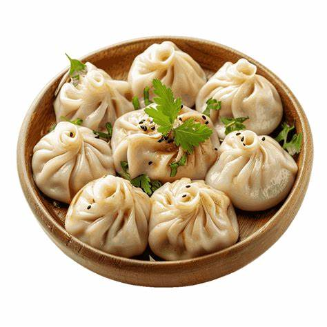
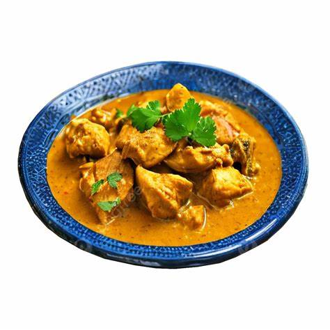
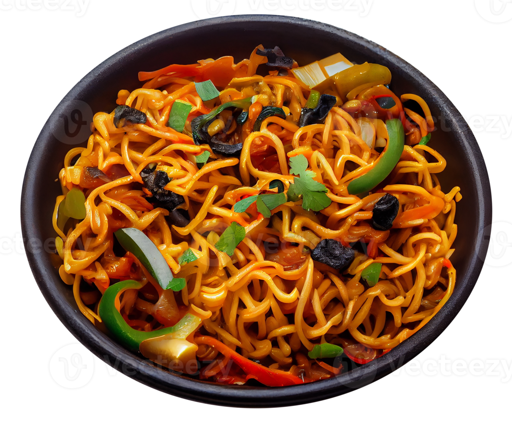

About Us
Welcome to Kushal's crushing food! Our restaurant brings the authentic flavors of Nepal to Birmin. Enjoy our delicious momos, succulent dumplings filled with spiced meat or vegetables, and signature Thali sets that present a harmonious blend of curries, lentils, pickles, and chutneys. Our menu also features tender chicken curry, lamb sekuwa, and a variety of vegetarian dishes like vegetable tarkari and sautéed spinach. Each dish is crafted with fresh ingredients and traditional recipes. With our warm ambiance and friendly staff, every visit promises a memorable dining experience. Join us and embark on a culinary adventure that celebrates the rich heritage of Nepal.
Location: Aston university Student iD:240089263 Email: 240089263@aston.ac.uk
Name:Kushal Subedi
Signature Dishes
- Momo
- Chicken Curry
- Chowmein
Explore Our Recipes
  Discover our secret recipes.
View Recipes